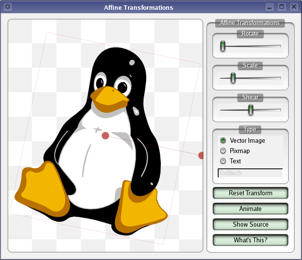

Affine Transformations
Demonstrates how affine transformations in QPainter works.
In this example we show Qt's ability to perform affine transformations on painting operations.

Transformations can be performed on any kind of graphics drawn using QPainter. The transformations used to display the vector graphics, images, and text can be adjusted in the following ways:
- Dragging the red circle in the centre of each drawing moves it to a new position.
- Dragging the displaced red circle causes the current drawing to be rotated about the central circle. Rotation can also be controlled with the Rotate slider.
- Scaling is controlled with the Scale slider.
- Each drawing can be sheared with the Shear slider.
Files: